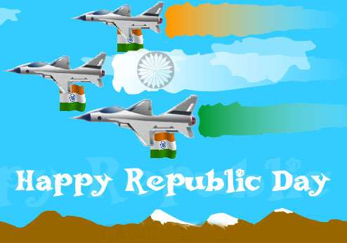

Republic Day Celebrations
Twenty-sixth January is a red letter day in the history our nation. It was on this day that our own Constitution came into force and our country become a secular, democratic republic. It reminds us of the day when the Congress Party took a historic pledge to free the country from the foreign rule. The preparations arrangements are made in the lawns near India Gate. There are both V.I.P. seats and ordinary seats. The tickets are made available from different places. One platoon from every regiment takes part in the parade. In the same way, the sailors and airmen are drawn from the Indian Navy and Indian Air-Force. The country proudly displays her night through the gums tanks, ships and aeroplanes. The function starts early in the morning. The Prime Minister lays a garland near to Jawan-Jyoti. He pays homage to the martyrs who gave their lives to save the nation. At exact 8 A.M. the President reaches the saluting base and is received by Prime Minister and other Ministers. He is also the Supreme Commander of our armed forces. The march begins with the heroes of the earlier wars. All those members of the armed forces who won the highest decoration, i.e., the Param Vir Chakra lead the march. Then comes the young boys and who win bravery award for the year. The soldiers march briskly. The band plays martial tunes. As they pass the saluting base, they turn their eyes towards the President. The Commanding Officer salutes and marches on. The members of the paramilitary forces also take part in the march. Last off all come the Jhankies of Various states in which they display the life of the people. The cultural troupes also perform the folk dances. The students drawm from various schools of Delhi bring up the rear. They put up a very beautiful show in the from of dances and national songs with action. The whole of programme is telecast on the T.V. On January 28th, there is beating of retreat. The soldiers taking part in the parade march Jump to their barracks. It is one of the most charming displays out up our armed forces every year.